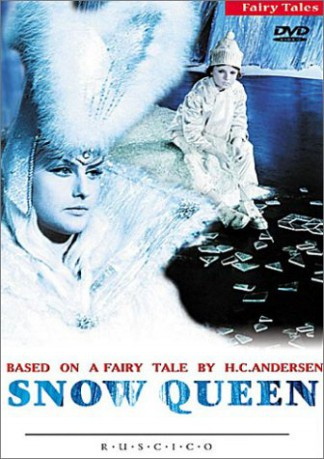

IMDB-Wertung: 7.1 / 10
IMDB-Wertung: 7.1 / 10  Metascore:
Metascore: 
An adaptation of Hans Christian Andersen's fairy tale "The Snow Queen".
Alternativ: The Snow Queen (Englischer Titel)
 IMDB-Wertung: 7.1 / 10 Metascore:
An adaptation of Hans Christian Andersen's fairy tale "The Snow Queen".
Jahr: 1967
Dauer: 78 Minuten
FSK: 0
Land: Soviet-Union Studio: VEB Progress Film-VertriebTonspuren:
Untertitel:
Auflösung: 720p (1280x538) Größe: 3041 MB
Genre: Drama, Abenteuer, Fantasy, Familie
Regisseur: Gennadiy Kazanskiy
Drehbuch: Hans Christian Andersen
Soundtrack: Nadezhda Simonyan
Darsteller:
Datei: X:\1967\Schneekönigin, Die (1967, FSK0, 1280x538).mkv seit 02.01.2018
Festplatte: HD 1900-1970
 Es gibt insgesamt 24 Filme in der Gruppe '1967'
Es gibt insgesamt 24 Filme in der Gruppe '1967'